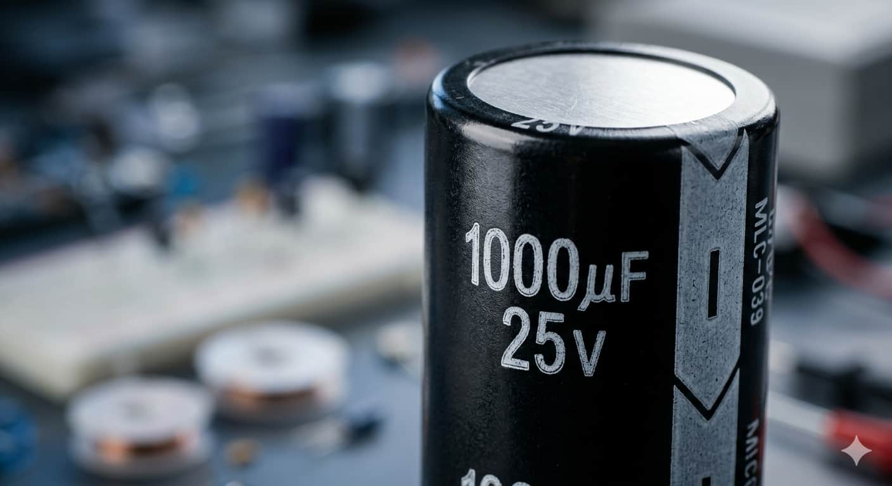
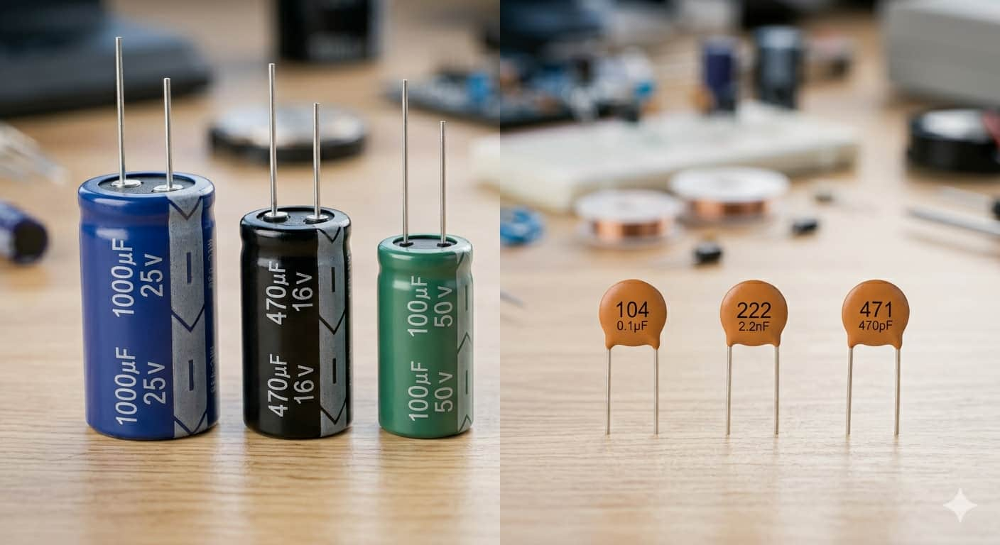
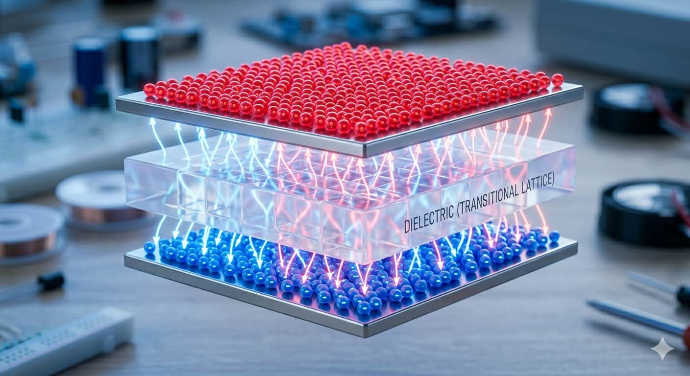
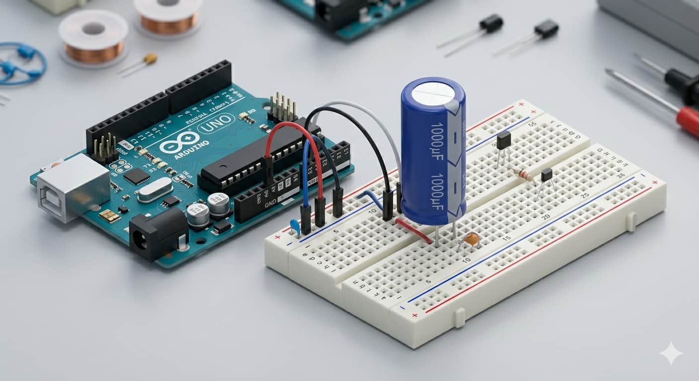

Capacitancia
Se mide en Faradios (F). Como un Faradio es enorme, en electrónica usamos microfaradios (µF), nanofaradios (nF) o picofaradios (pF).

El capacitor es como una batería temporal de carga ultra rápida. Su función es almacenar energía eléctrica en un campo eléctrico para liberarla cuando el circuito lo necesita, manteniendo el flujo constante y libre de ruidos.
Se mide en Faradios (F). Como un Faradio es enorme, en electrónica usamos microfaradios (µF), nanofaradios (nF) o picofaradios (pF).

Es el límite que soporta antes de fallar. Si tu circuito es de 5V, lo ideal es usar uno de al menos 16V para garantizar seguridad y estabilidad.

Existen los Electrolíticos (con polaridad) para gran capacidad, y los Cerámicos (sin polaridad) para filtrar ruidos de alta frecuencia.

Constan de dos placas conductoras separadas por un material aislante llamado dieléctrico. Los electrones se acumulan en una placa pero no pueden cruzar a la otra, creando un desequilibrio que almacena energía. Es como un tanque de agua elevado: si la bomba falla un segundo, el tanque sigue suministrando flujo mientras se vacía.
Aunque no se "programan" mediante código, su instalación física es vital para evitar reinicios inesperados causados por motores o ruidos eléctricos.

Se colocan generalmente en paralelo con la fuente de alimentación para actuar como estabilizadores:
Cuando un motor arranca, consume mucha energía de golpe provocando una caída de voltaje. El capacitor suple esa energía instantáneamente, permitiendo que el microcontrolador siga funcionando sin interrupciones.
Profundiza en la ciencia detrás del almacenamiento de carga con este video explicativo: